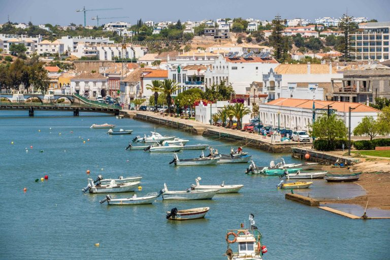

omgeving
Praia do Barril


Praia do Barill is een strand aan de oostkust van Portugal. Het is bekend als een van de mooiste stranden van de Algarve. Wat dit strand zo bijzonder maakt is de scheiding van de kust door het wad. Je kan het strand bereiken door middel van de wandelroute die over het wad is aangelegd (1km) of door het treintje te nemen die naast de wandelroute rijdt. Bij beide opties kan je genieten van het mooie uitzicht van de boulevard van Santa Luzia en de wadden die naar het strand leiden. Beide gaan door een mooi stukje natuur waar je vogels en andere dieren kan spotten met behulp van boordjes die informatie over de dieren geven en langs de weg zijn neergezet. Na de wandeling (of treinrit) kom je aan op een pleintje dat vroeger een oud vissersdorpje was. Er zijn hier gezellige barretjes en strandwinketjes waar je leuk kunt eten, drinken en shoppen.
Tavira
Tavira is een gezellig oud dorpje dat aan aan de monding van de rivier Gilao ligt. Het dorp ligt midden in het zoutpannengebied van Rio Formosa en ligt ongeveer 30 kilometer van Faro en 20 kilometer van de Spaanse grens. Vanaf Santa Luzia ben je hier met 10 minuten. Tavira wordt wel is het Venetië van de Algarve genoemd door zijn ligging langs de rivier. Tavira is een van de weinige plaatsen waar het Portugese karakter bewaard is gebleven. Tavira is sfeervol en levendig in alle seizoen en zit vol met goede restaurants, winkels, terrassen en barretjes. Ook zit Tavira bomvol met kerken en oude stadsmuren.
Ilha de Tavira
Het prachtige lange en kindvriendelijke strand van Ilha de Tavira is bereikbaar middels een 5 – 10 minuten durend boottochtje over de rivier. De boottocht op zich is al om te genieten, met name voor kinderen. De oude vissersboot vaart door de rivier en een stukje natuurgebied. De boot gaat af en aan en in de zomer vaart hij zelfs tot middernacht en is er volop vertier op het eiland. Er is tevens een camping en een grote keus aan restaurants. Het strand is gekwalificeerd met een blauwe vlag, wat betekent dat het tot de schoonste stranden van Europa behoort. In Portugal valt Ilha de Tavira onder de mooiste en beste stranden van Algarve.